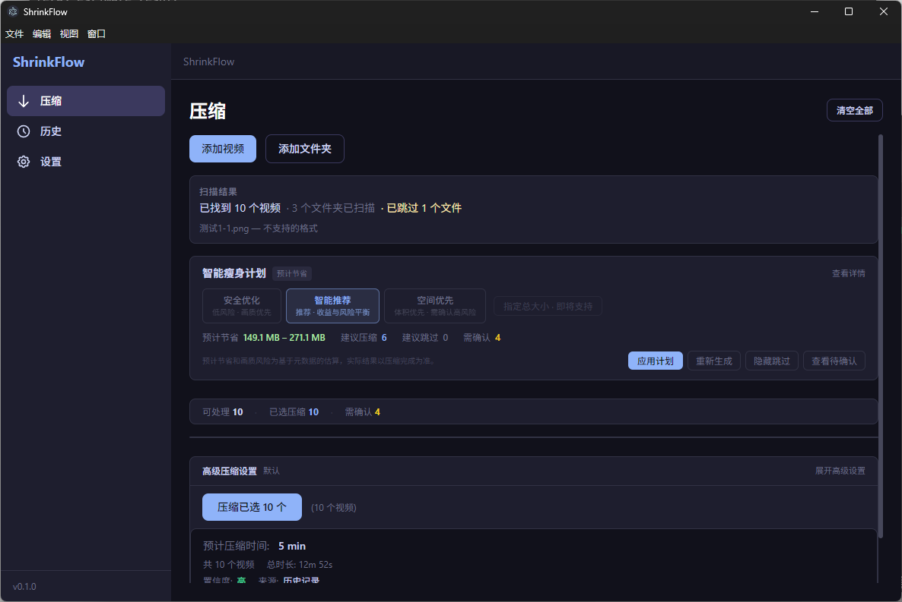
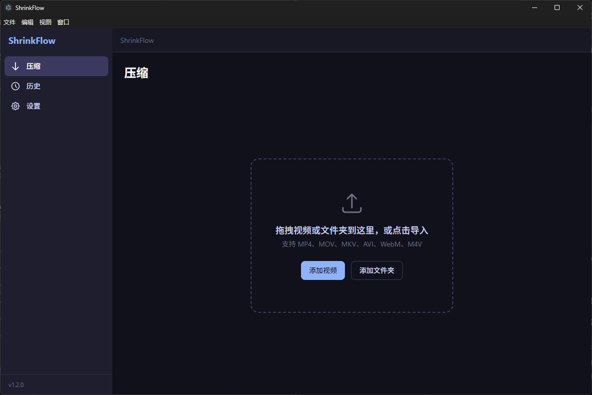
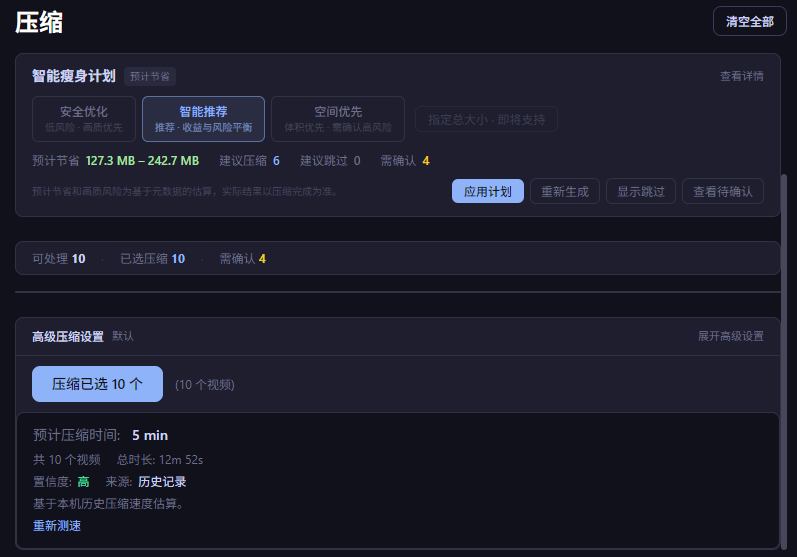
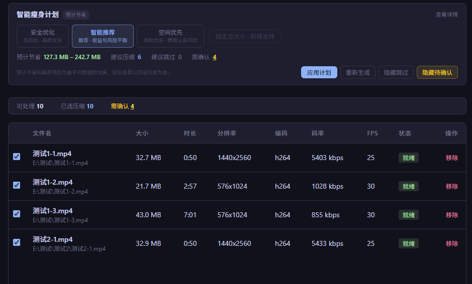
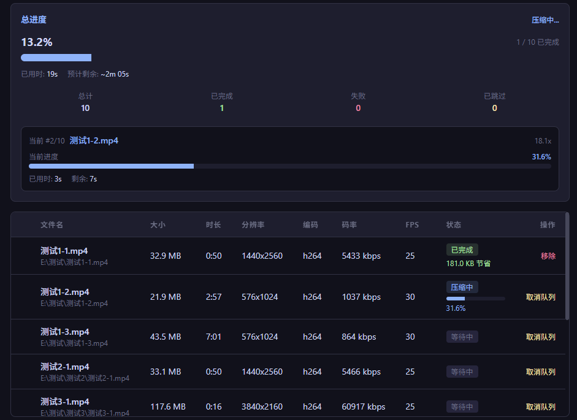
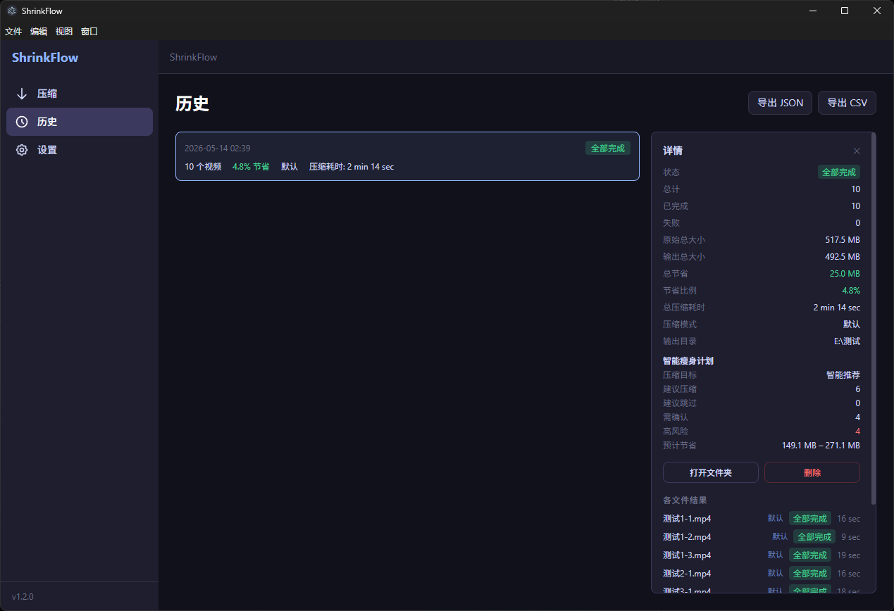
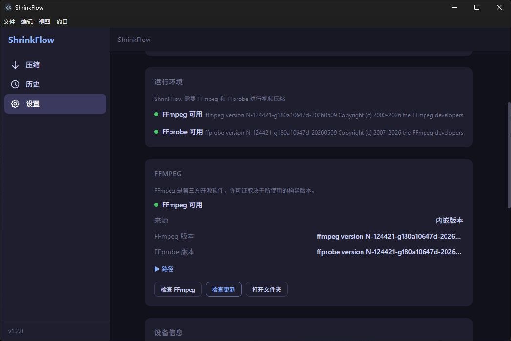
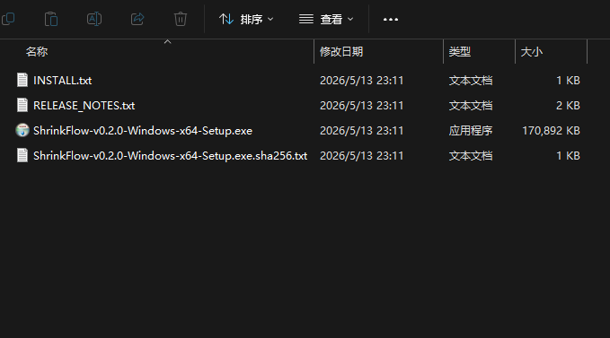

让普通用户不用理解 CRF、码率和编码器，也能做出可靠的视频压缩决策。
基于元数据的可解释规则引擎，为每个视频生成 compress / skip / confirm 建议。
每个视频可使用不同 recommendedMode，并在历史记录中保留实际模式。
压缩后变大不替换原文件，高风险场景需要确认。
大多数工具暴露参数，用户需要的是决策。
同一批视频里，4K 高码率素材、已压缩视频、HEVC 视频不应该共用同一套参数。
有些视频压缩后反而变大，有些视频画质损失明显，但传统工具往往只告诉你"完成了"。
CRF、preset、码率、像素格式是工程参数，不是普通用户真正想做的选择。
通过 FFprobe 提取每个导入文件的编码格式、码率、分辨率、时长和文件大小。
使用 6 层规则引擎将每个视频分类为压缩、跳过或确认。
每个文件获得自己的推荐压缩模式，而不是共享一个全局设置。
输出大于输入保护和原子替换确保原始文件安全。
用户表达意图，ShrinkFlow 选择策略。
每个视频获得自己的操作和压缩模式，而不是共享一个全局设置。
安全优化、智能推荐和空间优先一键切换整个批次的风险偏好。
每个推荐都包含原因代码，让用户知道为什么文件被压缩、跳过或确认。
当输出变大或操作失败时避免替换原始文件。出错时回滚。
FFmpeg 已捆绑。处理在本地运行，无需将私人视频上传到任何服务器。
拖放文件或选择文件夹。
FFprobe 提取编码格式、码率、分辨率、帧率。
6 层引擎分类每个视频。
每个文件获得自己的推荐模式。
原子替换，输出保护。
每项模式和节省记录。
透明的规则引擎，不是黑箱。
缺少元数据、小文件（<20MB）、极短视频（<5s）立即跳过。
高效（HEVC/AV1/VP9）、通用（H.264）、编辑（ProRes/DNxHD）、未知。
BPPF 层级、分辨率、文件大小、时长、码率。每个都成为原因代码。
安全优化 / 智能推荐 / 空间优先各自应用不同的风险阈值。
高效编码重压缩和低 BPPF 情况降级为确认。
预期节省低于阈值的文件被跳过以避免浪费。
| BPPF 层级 | 范围 | 含义 |
|---|---|---|
| 已压缩 | ≤ 0.045 | 重度压缩，空间极小 |
| 低 | 0.045 – 0.075 | 轻度压缩 |
| 中 | 0.075 – 0.12 | 典型消费级视频 |
| 高 | 0.12 – 0.20 | 良好的压缩候选 |
| 极高 | > 0.20 | 优秀的压缩候选 |
智能计划不总是选择相同的模式。每个文件可能获得自己的推荐模式。
| 模式 | CRF | 预设 | 音频 | 角色 |
|---|---|---|---|---|
| 默认 | 21 | medium | AAC 128k | 通用 |
| 均衡 | 24 | medium | AAC 128k | 手动均衡模式 |
| 质量优先 | 20 | slow | AAC 192k | 更安全的画质 |
| 重度均衡 | 25 | medium | AAC 128k | 节省空间，轻微质量损失 |
| 最小体积 | 30 | medium | AAC 96k | 手动极限，可能降至 720p |
| 目标大小快速 | — | medium | AAC 128k | 目标码率，单次编码 |
| 目标大小精确 | — | medium | AAC 128k | 两次编码目标大小 |
如果压缩后的文件大于原始文件，ShrinkFlow 会避免替换。原始文件保持不变。
备份 → 替换 → 清理。如果任何步骤失败，系统回滚到原始文件。
高效编码重压缩和高风险情况会被标记供用户审核后再继续。
预期收益低于阈值的文件会自动跳过以节省时间。
从导入、智能计划、批量压缩到历史记录和发布交付的完整产品闭环。

目标选择器和预计节省。
02-smart-plan.png

空状态和导入操作。
01-import.png

智能计划控制状态。
03-plan-active.png

查看需要确认的视频。
04-confirm-filter.png

整体进度和预计剩余时间。
05-progress.png

每项压缩模式和节省。
06-history.png

捆绑 FFmpeg 状态。
07-settings.png

安装包、SHA256、安装说明。
08-release-folder.png
36 个 IPC 处理器。FFmpeg 生命周期、文件扫描、任务队列、历史存储。
带上下文隔离的类型化 API 边界。contextBridge.exposeInMainWorld。
React 18 UI，Zustand 状态管理，智能计划编排。
纯 TypeScript 规则引擎。无副作用，可独立测试。
主要模块
下一阶段方向
5 秒样本压缩，获得更好的 ETA 和节省估计。真实编码速度替代基于规则的估计。
使用过去的压缩结果校准未来估计。使用越多，越准确。
压缩后 SSIM / PSNR 测量。用具体数字量化视觉质量影响。
批次级汇总，包括总节省、模式分布和按压缩比排名的文件。
自定义 CRF、preset、音频码率配置。保存、加载和重用压缩配置。
将 CRF、码率、编码器这些工程参数，抽象成用户能理解的 compress / skip / confirm 决策。
不是黑箱推荐，而是通过 17 个 reason codes 让用户理解每个决策。
输出变大保护、原子替换、高风险确认，避免"压缩工具伤害原文件"。
Smart Plan、手动模式、队列执行、筛选、历史记录之间保持一致，避免"显示一套、执行一套"。
从 FFmpeg 内嵌、Windows 打包、安装包体积优化到 release-final 和 showcase-site，完成可演示交付。